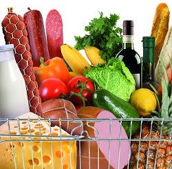

This week, we have plenty of your favorite summer vegetables on sale. All the vegetables we sell at the Food Store are grown right here, so you know our vegetables are always fresh and delicious. Although our produce is always on sale, just check below to see the savings compared to last week.
Here's just a few of the items on sale this week:
Although we love to see you spend time at the Food Store, we know that you have other
places to be. We've introduced new self-checkout registers at all our Food Stores.
Just swipe your Food Sture savings card and you are ready to start saving on everything
that's on sale in the store.
If you want to really zip in and out of our stores, just grab
a price scanner on the way in and take a few paper shopping bags as well. Scan the item before
you place it in a bag. As you travel through the store, the price scanner will alert you to
what's on sale in that aisle. You'll get discounts on items you have in your purchase history,
and you will get coupons for items that are not on sale.
Food Store
25 Rocky Mountain Drive
Suite 345
Boulder, CO 54333
877 345-4566